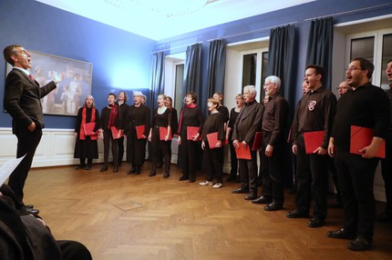

Неизвестный автор | 12.12.2011
Всероссийская акция "Ночь искусств" пройдет 3 и 4 ноября в 85 регионах страны, в ее рамках запланированы более 3,5 тысячи мероприятий. Жителей и гостей столицы ждут более 250 спектаклей, перформансов и концертов, в частности на московских вокзалах, в аэропорту "Шереметьево" и даже на подводной лодке, рассказал на пресс-конференции директор департамента информационного и цифрового развития Минкультуры РФ Вадим Ваньков.
ПодробнееНеизвестный автор | 10.11.2014
«Никита Борисоглебский отличается глубиной музыкального мышления, безупречной техникой и редким сочетанием элегантности, естественности и бескомпромиссной строгости исполнения», – отмечал автор La Libre Belgique, крупнейшей бельгийской ежедневной газеты. В Малом зале филармонии скрипач, выступающий на ключевых мировых сценах, исполнит сочинения трех веков – от Моцарта до Стравинского. Его сценический партнер в этот вечер – пианист Георгий Чаидзе, после дебюта которого в лондонском Уигмор-холле The Telegraph отмечала «развитую чувствительность и превосходно отточенную технику» музыканта.
ПодробнееНеизвестный автор | 19.10.2019
Приглашение на концерт, состоявшийся 9 октября этого года, конечно, заинтересовало, но номинальный интерес, как это всегда и бывает, изначально возник из любопытства, ибо до настоящего момента о заявленном хоровом коллективе из Швейцарии автору этих строк ничего известно не было. Но услышанное на концерте настолько поразило высочайшим уровнем музыкальности и одухотворенно тонкого, рафинированного прочтения духовной и светской музыки, что простое любопытство переросло в неподдельно искренний интерес. А к финалу программы интерес перерос уже и в осознанно радостную восторженность!
Подробнее